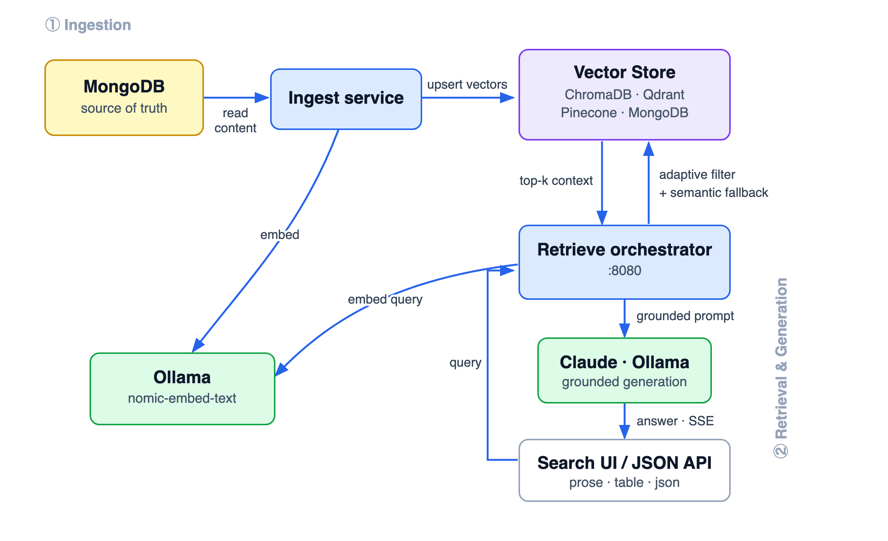

Enterprise RAG Engine · Built in Go
Omni
RAG
Retrieval intelligence in the orchestration layer — swappable across ChromaDB · Qdrant · Pinecone · MongoDB

github.com/dharmendrra/Omni-RAG
Dharmendra Yadav